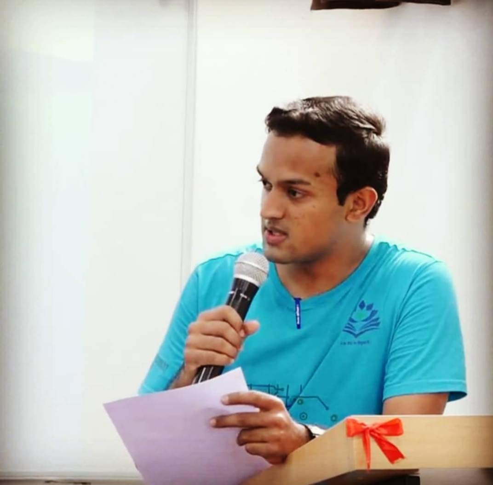

Here are some of my contributions to the institute events, in reverse-chronological order.
Headstart
March 2020
Student-coordinator for IIC and overall coordinator for Headstart event on 14th March 2020 (event was cancelled due to outbreak of COVID-19). The aim of this event was to bring together some of the best innovators, innovation managers and entrpreneurs for talks and panel discussion, for the benefit of young-innovative minds at IIT Dharwad.
Parsec 2020
February 2020
Outreach Lead for Parsec 2020. Coordinated with the invitees (chief guests, speakers and jury members) regarding their invitations, logistics and hospitality.
IIC Student Coordinator
November 2019
Nominated as Student Coordinator of IIT Dharwad Institute Innovation Council (IIC).
Incredible India Quiz
August 2019
Winner of Incredible India Quiz, held as a part of Inter-Branch Cultural Championship 2019-20 of IIT Dharwad.
Volunteer
July 2019
Participated as a volunteer on the registration day activities held for freshers in 2019.
Institute Student Mentorship Programme
July 2019
Selected as a Student Mentor in the Institute Student Mentorship Programme for the academic year of 2019-20.
Project Presentation
February 2019
Selected among the few students by the institute to present my project to Mr. N. R. Narayanamurty, co-founder of Infosys, during his visit to IIT Dharwad.
Student Lecture
January 2019
Delivered a student lecture in the institute on my winter school experiences at RAWSC 2018 conducted by IUCAA and NCRA-TIFR of Pune.
DIAL 2018
October 2018
Chief Student Coordinator, organiser and host of the event, Development of Industry-Academia Link (DIAL) 2018.
Foundation Day
August 2018
Hosted the 2nd Foundation Day event of IIT Dharwad in 2018.
Student Lecture
August 2018
Delivered a student lecture in the institute on my internship experiences at Yara Fertilisers India Pvt. Ltd.
Ice-Breaker Session
August 2018
Member of the organising committee of 'Ice-Breaker Session' held for the freshers in 2018.
International Yoga Day
May 2018
Hosted the event held at IIT Dharwad as a part of International Yoga Day celebrations.
Mess Committee
January 2018
Memeber of mess committee during 2nd Semester. Instrumental in formalizing mess committee procedures and procurement of lactometer.
Visit to Tinkerer's Lab at IIT Bombay
October 2017
Selected by the institute to be among the group of four students who visited IIT Bombay Tinkerer's Lab and submitted a report to IIT Dharwad for the establishment of a similar facility.
Correspondence Details
ksanu1998@gmail.com
170030035@iitdh.ac.in
House No. 2, Hostel 2 (Bhairavi),
New Hostel Complex, IIT Dharwad,
WALMI Campus, Belur Industrial Area,
Near High Court, P.B. Road,
Dharwad, Karnataka, India - 580011